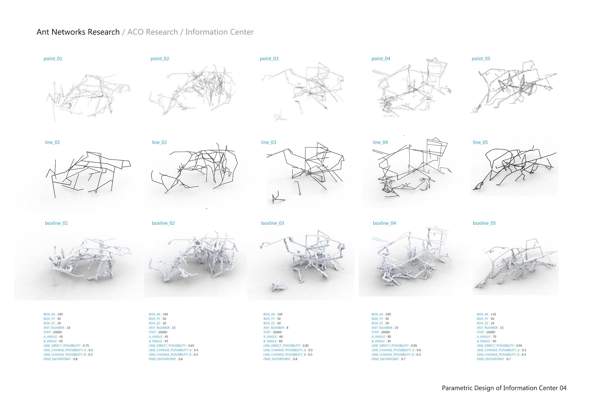
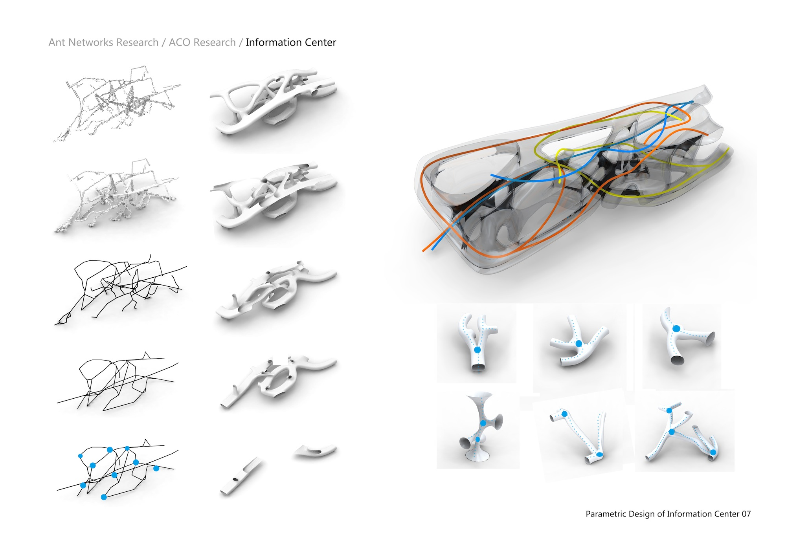
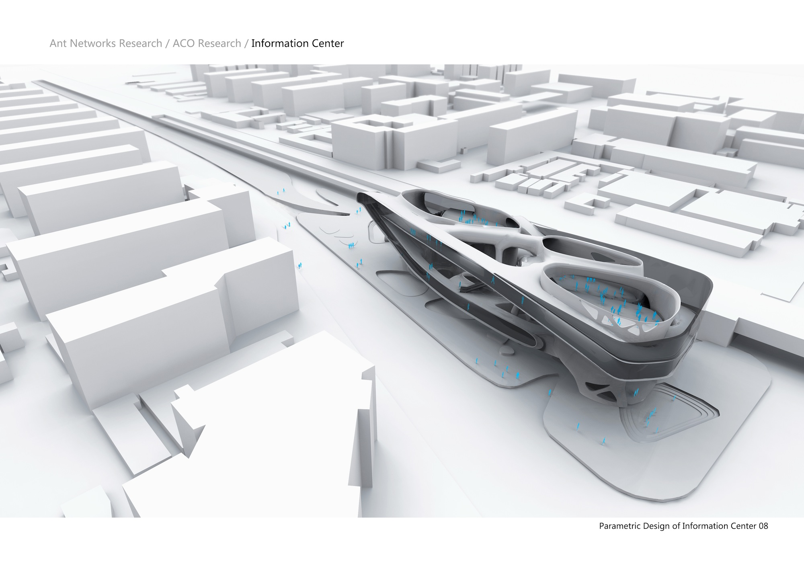
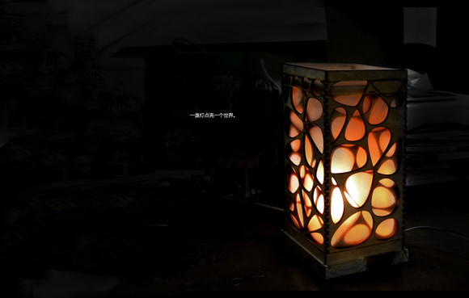
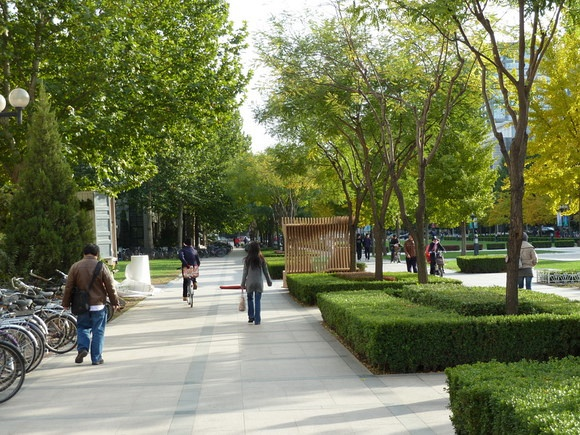
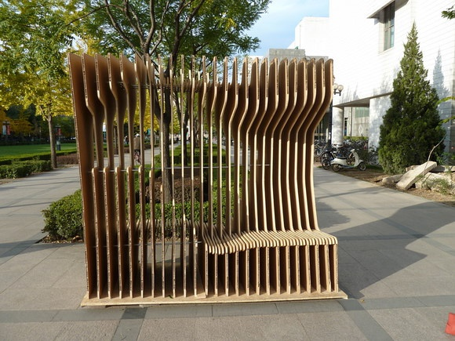
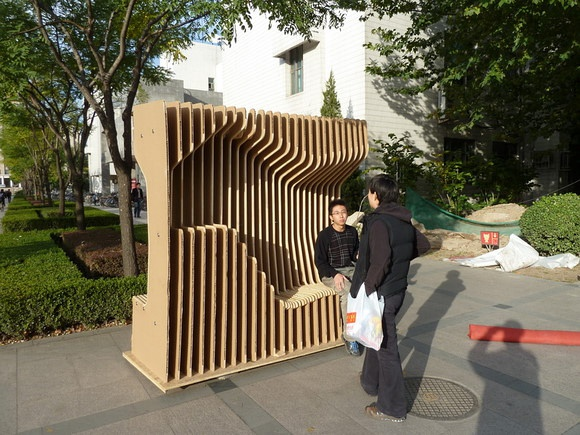
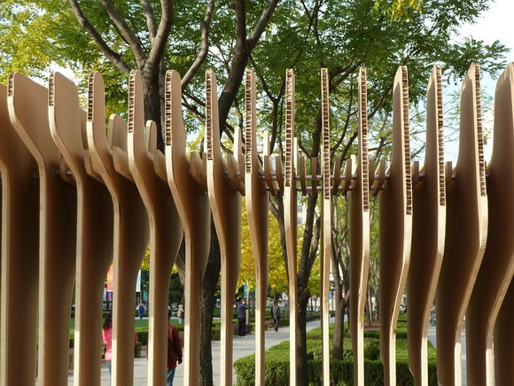
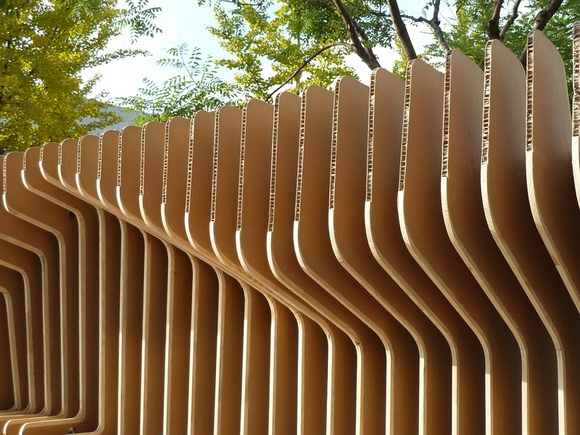
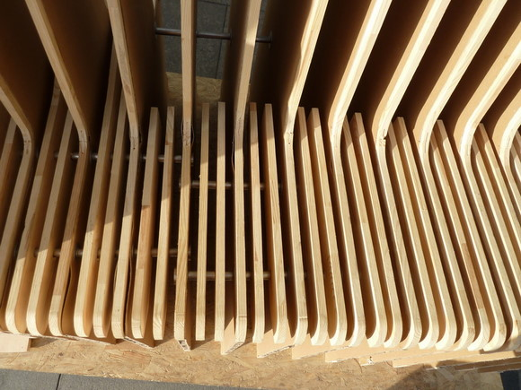

本文写于2010年，三年多过去了，观点依然没什么改变。
自己算是做过两次参数化设计的尝试，一次是X老师大三上学期的STUDIO，研究的是蚁洞空间（ANT SPACE），研究成份占的时间比较多，最终用于建筑转化的时间比较少，所以研究与建筑之间的关联性有一定的问题。第二次是构造STUDIO，探讨用纸板加木头这两种材料做一面墙（WALL），试图从人的尺度及对功能的诉求为出发点，为墙植入一些功能。
先说第一次的尝试，我之前对参数化完全是门外汉（现在差不多也是）， 很大一部分时间是花在了建筑之外，比如软件的学习、算法和编程语言的学习，真正用来思考建筑的时间是比较少的。当时有几点体会，一是觉得任何学科的科学化的过程都少不了数学，建筑在试图发展其科学维度的时候也离不开数学语言的描述，当然建筑还有许多其它的维度是不能用纯理性表述的。二是觉得很多时候我们对一个东西不了解就随意评论，只有对一个东西有了最基本的认知之后，才能较正确认识这个东西，参数化也不例外。三是觉得参数化在以后肯定会大有用处，是不是现在这么用还不清楚。



然后接着就进入了下一个STUDIO，构造。说来也巧，X老师课上讲的三个趋势我在一个学期体验了两个（参数化与建构），并且建构也是用参数化的思想来进行的。在这个STUDIO开始的时候，柯大叔让每个人做个BOX，我本着实验的态度做了个灯，可惜后来不见了。

这次建造的对像（WALL）不大，所以可以研究得比较深入。从一开始引出的对人的使用的细致考虑，到后来不断调整形体，使之更适合人的坐、卧、立等各方面，再到后来探讨节点，一点点用CAM把它建造出来，算是比较全面体验了一把从思想到形体到完成，中间全程是计算机及数控机床辅助的过程。这时自己也了解到了一些世界上别的学校对参数化的态度，我的思想较第一次又有一些变化。之前的STUDIO可能有点像AA，以研究生成为主，之后的STUDIO可能像ETH，回到建筑最基本的问题——建造。方案能否实现，用什么方式将其实现，如何把参数化的思想和工具用到设计-制造-施工整个流程中去，硬件和软件再到最后制作的整个工序如何结合，这些都是会被讨论的问题。而且当时除了最后出图，过程中没画什么表现图，过程中面对的是材料、节点、模型。老师和我们想尽一切办法，用建筑的方法，去解决非规则建造的问题。这时的我觉得，设计做的再好，图画得再漂亮，但是如果能够得到真实的建造，是不是更有现实的意义？实物永远最有震撼力与说服力。






再到现在，我对这些事情又有了新的理解。所谓的建筑的三个趋势，建构本身不应该是趋势，这是建筑的本原，是所有理论的基础，古代人没有建筑流派与理论的时候已经在盖房子，还有那些没有建筑师的建筑，他们靠的就是建造——建筑之所以立起来的原因。再说参数化，这是一个很好的方式，从方案的构思，建造到整个工程的管理都可以用参数化来让建造过程变得可控。如何在方案时用参数化，我觉得两种方式都可以，一种是生成为导向，以各种参数为变量（日照、人流、空间尺度），用模拟或者一些空间形式的算法做出满足要求的设计，再落实到建构，或者是先研究什么样的材料可以在参数化的方法下发挥多大的潜能，创造出怎样的新的建造的方法，然后再根据这些研究的成果，这些建造方法和逻辑，对思考的方式给出一个基本的框架，对建成及施工提供可用的手段，然后再去做设计，最后建成实物。
至于很多人质疑的形式（FORM）问题，我在想，所有的形式都是可以被质疑的，现在主义、后现代、地域主义等等都不例外，因为建筑本不像物理、数学一样有十分严密的逻辑，数学物理是任何人都可以在此逻辑下证明你想说明的问题，建筑不然。现在对形式的质疑是因为很多时候我们希望给自己穿上一件“纯科学”的外衣，其实没有必要，科学性是必要的，比如因为流线等原因我这儿需要倾斜一下，但至于是40度还是41度，有什么关系呢？所以每当人问我为什么是这个形式的时候，我想说，因为这样因为那样，不过在都满足这些条件下（科学性），我喜欢这个（艺术性），这就是原因吧？
写于2010年底